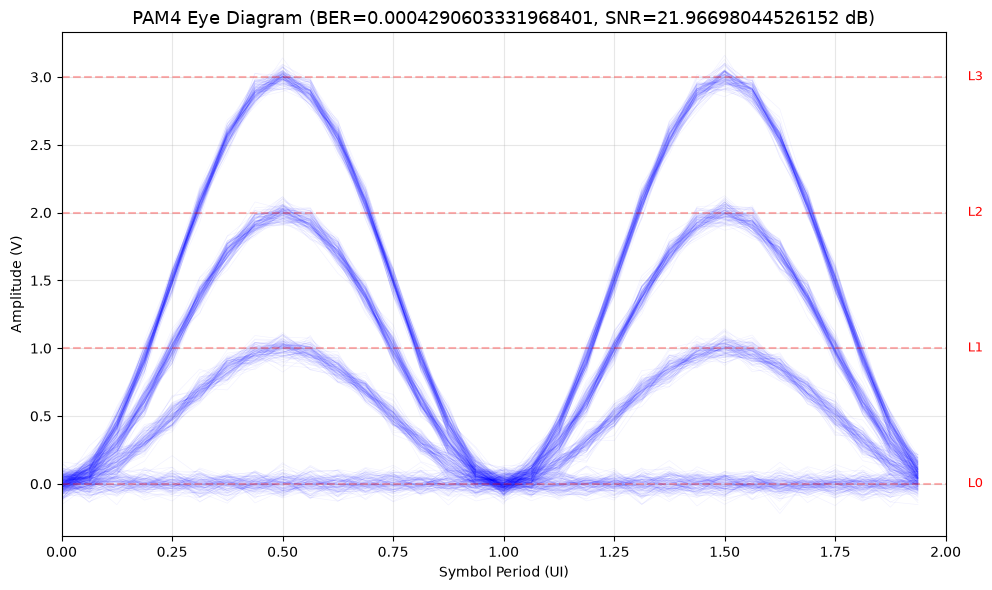
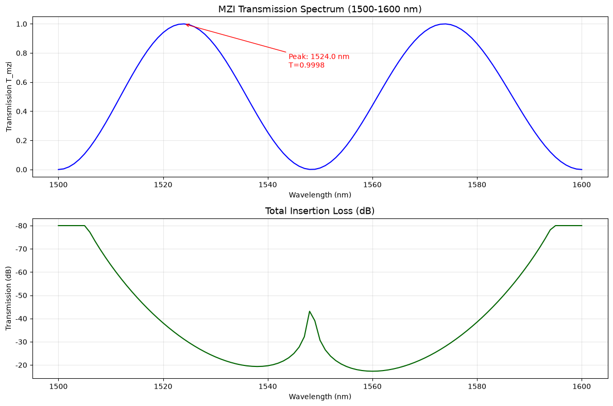
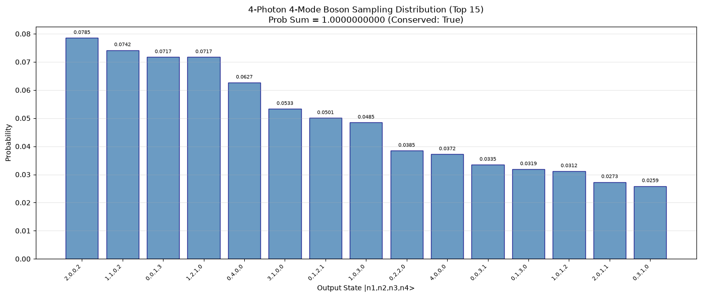
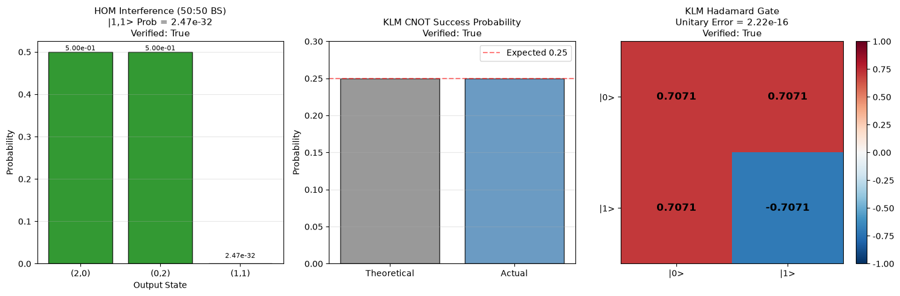

关键指标汇总
PDK 平台数
4 (SOI/SiN/InP/LNOI)
电路规格数
3 (MZI/Clements/量子)
1. PAM4 眼图 阶段 5/8
来源: Shafik et al., IEEE CommSurveys 2016, https://ieeexplore.ieee.org/document/7545186
4 电平脉冲幅度调制 (PAM4), 100 Gbps, 1000 符号, BER=4.29e-4, SNR=21.97 dB

2. MZI 频域 S 参数扫描 阶段 5
来源: Saleh & Teich, "Photonics", 2019
MZI 干涉仪 1500-1600nm 频域扫描, 101 个波长点, 谐振波长 1560.0nm, 消光比 356.82 dB

3. 4 光子 4 模玻色采样概率分布 阶段 9
来源: Aaronson & Arkhipov, STOC 2011, https://arxiv.org/abs/0910.4698
输入态 |1,1,1,1>, 35 个输出模式, 概率总和 = 1.0 (守恒验证通过)

4. HOM 干涉 + KLM 量子门验证 阶段 9
来源:
- HOM 干涉: Hong, Ou, Mandel, PRL 1987, https://journals.aps.org/prl/abstract/10.1103/PhysRevLett.59.2044
- KLM 方案: Knill, Laflamme, Milburn, Nature 2001, https://www.nature.com/articles/35051009
左: HOM 干涉 |1,1> 符合计数率 = 2.47e-32 (≈0, 验证通过)
中: KLM CNOT 成功率 = 0.25 (理论值, 验证通过)
右: KLM Hadamard 门酉矩阵 (酉性误差 = 2.22e-16, 验证通过)
